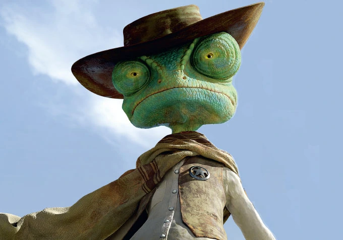

About Rango
Rango is the titular hero of "Rango"- An animated movie. Rango is an ordinary chameleon who accidentally winds up in the town of Dirt, a lawless outpost in the Wild West in desperate need of a new sheriff.
Rango in his Sheriff Costume.
Rango's Characteristics:
- Rango is a lonely pet lizard with an active imagination
- He fancies himself a swashbuckling hero and puts on "shows" with his companions - a headless Barbie, a dead insect, and a wind-up plastic fish.
- But when his owner's car makes a harsh turn, Rango's terrarium falls out onto the highway, leaving him utterly alone in the Mojave Desert. After following the advice of a sage armadillo.
- Rango comes across a female lizard named Beans, who takes him to her Old West hometown of Dirt, where water is such a scarce commodity that it's kept in a bank.
- Rango spins yarn after yarn about being a legendary bandit killer and manages to fell a killer hawk that terrorizes the town, so Dirt's mayor names him sheriff.
- But when Rango unintentionally allows the town's water supply to be stolen, he must either find it or admit that he's just a pretender.
Rango's Friends:
Rango has some awesome friends. His best being the Barbie, until later where we get introduced to Beans. She's awesome. Click on the links below to read more about them: